Bella Teaches the Linux Command Line. Copyright © 2020.
PDF version of Bella Teaches the Linux Command LineExamples are given with Ubuntu Linux. Other Linux distributions should be similar.
Start the Linux computer and it will proceed to the login screen.
Select the user name and enter the password.
The Linux desktop will display.
Open a Linux terminal. On the upper left hand side of the screen select Activities.
An input box saying “Type To Search...” box will appear.
Inside the “Type To Search...” input box type the word “terminal”.
The Linux terminal icon will appear. Select the terminal icon by clicking on it with the left mouse button. The terminal is also known as the Linux shell or the command line.
Congratulations! You have logged into Linux and opened a terminal on the desktop! The Linux Terminal is a command language interpreter that executes commands read from your input. In the next chapter we will execute some commands.
whoamiThe command whoami prints your userid. At the Linux terminal type the command: whoami.
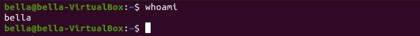
Linux responds that “bella” is the userid. Your system should respond with your userid.
pwdThe command pwd is used to print the name of current working directory.
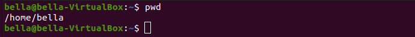
Bella’s current working directory is /home/bella. Therefore the bella directory is
inside the home directory. The first slash character / in the /home/bella directory name is known as the root directory.
The home directory is subdirectory of root. The bella directory is a subdirectory of home. All users of Linux have a directory in /home.
Linux has a hierarchical file system. The hierarchy starts with the root directory /. The structure of the file system looks like a tree. Inside the root directory / you will find files and subdirectories. The subdirectories can continue to have their own files or subdirectories. This structure can continue for many levels.
lsThe command ls lists directory contents. Directories can also be called folders. At the Linux terminal type the command: ls.
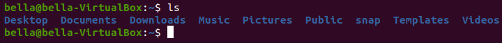
We see Bella has some directories. Your system should display something similar.
We can look inside an individual directory by giving command ls a specific
directory name to look in. Type the command: ls Music
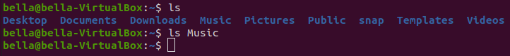
Looks like Bella has no music since the Music directory is empty. When we type a command such as ls Music we say that Music is an argument to the command ls.
When we type the command ls alone we can say ls has no arguments.
We can check if Bella has any documents. Type the command: ls Documents
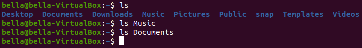
The Document directory is empty. Bella has no documents.
The command ls has the ability to match filenames using a wildcard. Try typing the command: ls D*
The asterik * or star character tells the command ls to match any string after the letter D. The contents of all directories begining with the letter D will be displayed.
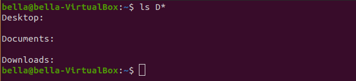
The directories Desktop, Documents and Downloads are all empty.
Use the command ls to explore the Linux filesystem. Type the command: ls /
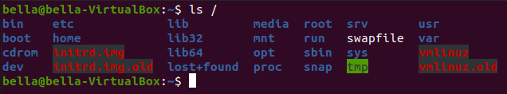
This lists the contents of the / which is known as root.
Type the command: ls /home
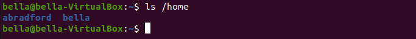
Bella’s home directory shows another user. Your system may display other users.
The command ls can also take options (also called switches). The listing of the contents of all subdirectories can be done with the command: ls -R
The -R part of command tells ls to recursively list all subdirectories. Try typing the command: ls -R
cdThe command cd changes your current working directory.
When the command cd is typed alone (with no arguments) the current working directory is changed to your home directory.
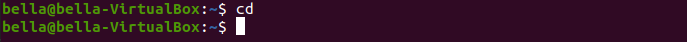
At the Linux terminal type the command: cd Music.
Now the current working directory has changed to the Music directory.
The command ls will display the contents of the Music directory.
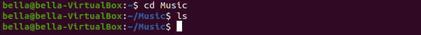
The Music is empty.
The command pwd will display the full directory path.
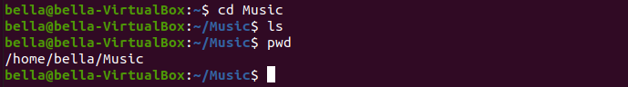
To pop up from the Music directory type the command: cd ..
Now the current working directory is one level above. To confirm this type the command: ls
Typing the command pwd will confirm that the current working directory is back to the user’s home directory.
mkdir and rmdirWhen using the command ls we can see that Bella has the following folders in
her home directory.
To create a directory named Test type the command: mkdir Test
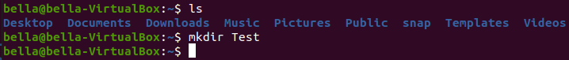
Try typing the command: ls to confirm this directory was created.
You should see the directory Test listed with the other directories.
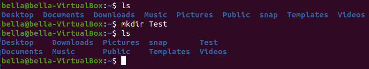
To remove the directory named Test type the command: rmdir Test
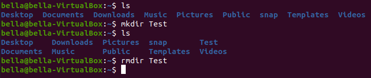
Type the command ls to confirm that the directory Test has been removed.
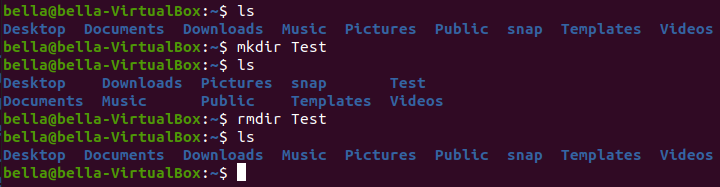
echo and catThe command echo is used to write text to the screen. The command echo can also write text to a file. At the Linux terminal type the command: echo.
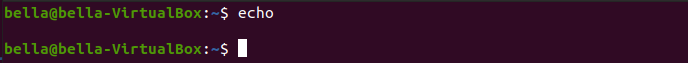
The command echo with no arguments will just display a blank line.
Now try typing the command: echo Hello
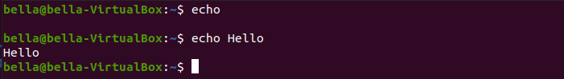
The text Hello will be displayed to the terminal. The command echo can also push text to a file.
Try the command: echo "This is a test" > file.txt
The greater-than sign > tells the command echo to redirect the output to the file. The output will not go to the display.
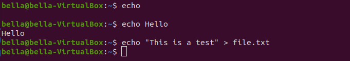
The command echo has placed the text “This is a test” inside the file.txt.
We can confirm the file exists with the command ls
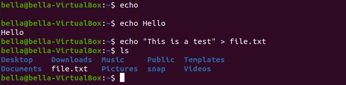
Notice the new file file.txt. The contents of the file file.txt can be displayed with the command: cat file.txt. The command cat can concatenate files and print files on the display. The contents of the file is the text “This is a test”.
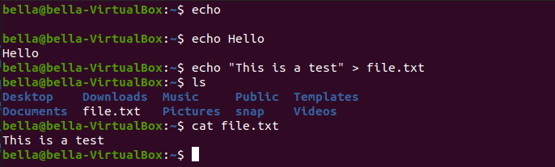
cp and rmThe command cp copies files and directories. The command rm removes files or directories.
Create a file with the command: echo "This is another test file" > TestFile.txt
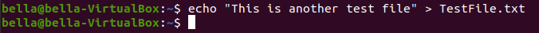
Confirm the file exists with the command ls and confirm the file contents with the command cat.
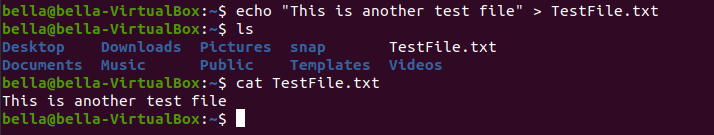
Using the command rm delete the file with: rm TestFile.txt
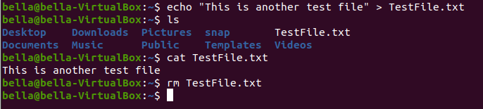
Now confirm the file was deleted with the command ls
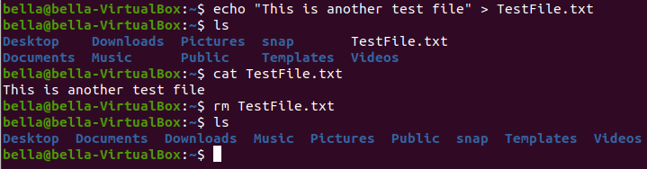
Create another file NewTestFile.txt with the command echo.
Type the command: echo "Test file to be copied" > NewTestFile.txt
Confirm the file exists with the command ls. Confirm the contents with the command cat.
Copy the file NewTestFile.txt to the file 1.txt with the command: cp NewTestFile.txt 1.txt
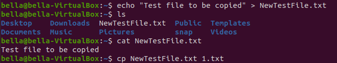
Copy the file NewTestFile.txt to the file 2.txt with the command: cp NewTestFile.txt 2.txt
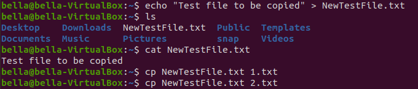
Copy the file NewTestFile.txt to the file 3.txt with the command: cp NewTestFile.txt 3.txt
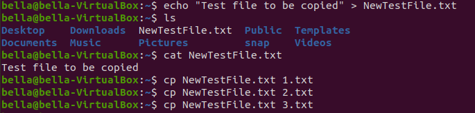
Confirm the existance of the new files 1.txt, 2.txt and 3.txt with the command: ls
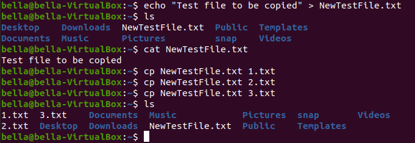
Concatenate the files 1.txt, 2.txt and 3.txt to the screen display with the command: cat 1.txt 2.txt 3.txt
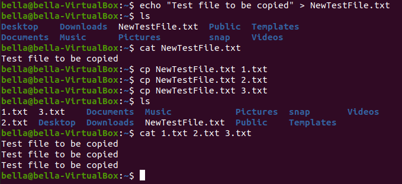
All three files are displayed on the screen back to back. All three files have the same contents. Remove one of the files with the command: rm 1.txt
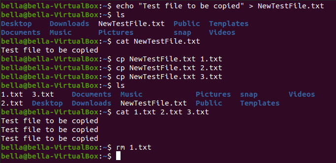
Using what is known as a wildcard have command ls check for files only ending with .txt file extension. Try the command: ls *.txt
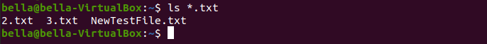
Only files with the .txt file extension have been displayed. The file 1.txt has been removed. Remove the files 2.txt and 3.txt with
the command command: rm 2.txt 3.txt
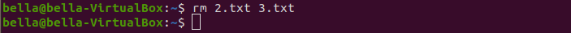
Confirm the removal of 2.txt and 3.txt by wildcard listing .txt file extension with command: ls *.txt
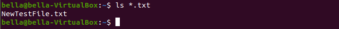
geditThe command gedit is a graphical text editor. gedit can be used to create or edit files. gedit can be started from the command line. Type the command: gedit myfile.txt to create and edit the file myfile.txt
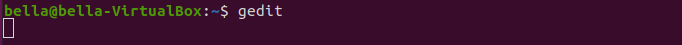
The gedit graphical text editor will display. Feel free to enter any text you want.
In this example I have entered the text “This is a test of the gedit graphical editor” and pressed newline. Press the “Save” button to save the file myfile.txt
Type the command: ls to see that there is a new file named myfile.txt.
Also try the command: ls *.txt to list all files ending with .txt. Both commands will show that the new file myfile.txt exists.
Feel free to use the command gedit myfile.txt to add more text or change the file myfile.txt.
more and lessdateThe command date will print the system date and time.
calThe command cal will display a calendar. With no arguments to the command, the current month is displayed. Todays date will be highlighted.
The command cal can display all months for a year. The year to display can be given as an argument to the command cal.
Try typing the command: cal 2020
The command cal can display calendars in the past. Try typing the command cal and giving the your birthday year as the first argument.
If your birthday year was 2009 you would type: cal 2009
clearTo clear the terminal screen type the command: clear
manThe command man provides a reference manual to commands. All commands such as whoami, pwd, ls, cd,
mkdir, rmdir, echo, rm, rm, more, less, date, cal and clear have reference manuals.
The command reference manuals give information on command usage and options. Command switches (options) and arguments are described.
Try command man ls
Explore more man pages. The command man even has a reference manual page. Try the command: man man.
topfortunecowsayfigletbannertoilet| Jump to: | B C D E F G L M P R T W Z |
|---|
| Jump to: | B C D E F G L M P R T W Z |
|---|